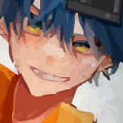
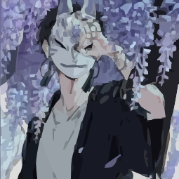
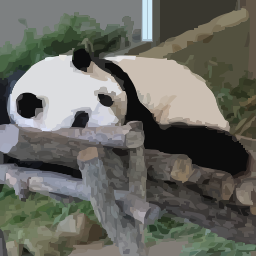
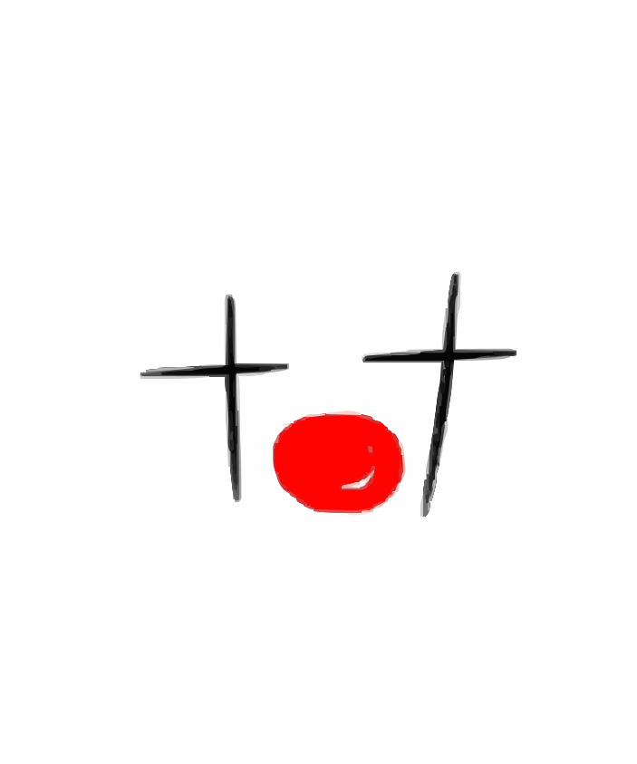
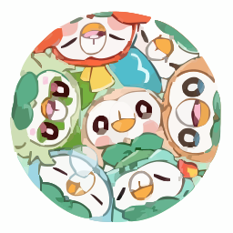
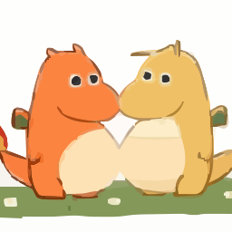
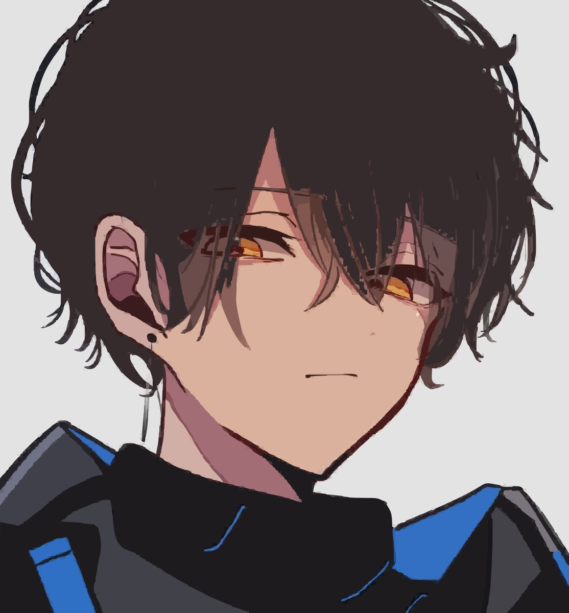
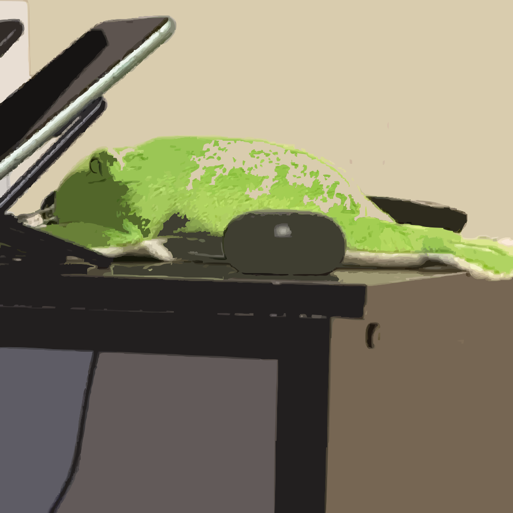

MASTER
kuro
@skuro709
男子高校生 08 Python, TypeScript, C, Obj-C++, PHPが書けます。 周りからは`性格破綻者`と言われてます。あと超絶面倒くさがりなので、課題は常にギリギリ…(;;) 頭脳明晰・品行方正（※大嘘）ですが、技術への愛と効率化への執着だけは本物です。仲良くしてください。
SDCで活動するチームとメンバーを紹介します。
カードを横にスライドすると、一人ずつプロフィールやSNSリンクを確認できます。
各カードは個別のプロフィール小窓です。メンバー名・紹介文・アイコン画像・SNSリンクは、公開前に実際の情報へ差し替えてください。
構成人数 3名

男子高校生 08 Python, TypeScript, C, Obj-C++, PHPが書けます。 周りからは`性格破綻者`と言われてます。あと超絶面倒くさがりなので、課題は常にギリギリ…(;;) 頭脳明晰・品行方正（※大嘘）ですが、技術への愛と効率化への執着だけは本物です。仲良くしてください。

留年を経てしれっと成人している高校生。 毎日アホなことして周りを巻き込んで生きてますが、不思議と周りに人が集まるタイプ。 PythonとHTML/CSS/JSを少しかじった程度。Discord垢はコロコロ変わります。 人生もコードも、エラーを笑い飛ばしながらマイペースに生きてます。彼女募集中

性別も年齢も秘密です。 深夜のオンライン時間が異常に長いため「本当に人間か？」と疑われたことがあり、少し悲しかった経験があります。 VCでは「中性声すぎてどっちか分からん笑」とdに言われ、不思議と嬉しくなりました。 言語は基本なんでもいけます。(独自言語は難しい)
構成人数 5名

VCで呼ばれ続けて定着したので、名前を`しー`に変えました。 いつもの場所で、いつも通りの日常を。 あの頃のやりとりが少しだけ恋しい夜もあります。 skは、kuroとsizukuの頭文字をとっています。 しーはshyder移籍記念(？)の海外旅行中の交通事故で亡くなってしまい、 もうこの世にはいません。私が代筆しました。←誰だろうね？

自称10代 / VCのカワボ枠 周りが自由すぎるせいで気づいたらSDC唯一の常識人になってしまいました。 勉強が得意で教えるのも上手！学生たちのテスト前になると凄く頼りにされる存在です！ 言語はPythonしか書けません！


高専3年生(合法ギリギリのグレーゾーンにいるらしい…) 大学に行くか、残り2年通うかの分岐点をリレーの勝敗で決めた男。 言語は調べれば大体なんでも書けるので実質無限。 今日も法と倫理と隙間で元気に生きてます。

日々感じたことを詩にしてInstagramに投稿しています。 最近(1年くらいかな)は忙しくて全然投稿できてないから沢山溜まってる！ 周りと同じアホ側だったことに気づいてしまった元常識人枠。 (※しーちゃんとイチャイチャしてるkuroを見るのが嫌でshyderに移籍しました。)

社会人 いつの間にか自分のアイコンがshyderの公式アイコンになっていて 最初は戸惑いましたが、1年経ってすっかり慣れました。 そろそろアイコンを変えようか迷ってます。見かけたら良いアイコン紹介してください。